ERRE
Este projeto tratou da criação de toda a identidade visual e registo audio-visual do projecto Erre, uma nova linha de intervenção da CRL – Central Elétrica, com foco na interação com o território. Esta iniciativa, com apoio do programa Garantir Cultura, trabalhou diretamente com os territórios e habitantes que envolvem a antiga central elétrica do Freixo, para conhecer e interagir com a comunidade, valorizando ações de caráter artístico, educativo, social e ambiental.
O projeto trabalhou sobre 4 áreas próximas da Central Elétrica, todas da freguesia de Campanhã, debatendo-se com questões da periferia, envelhecimento e carência económica e social, sendo elas Bonjóia, Azevedo, Noeda e Formiga.
Para além de acompanhar todo o projeto e fazer o registo fotográfico e audio-visual, foram desenvolvidas peças gráficas como convites, cartazes e flyers de divulgação das ações e atividades em cada um dos territórios, bem como os eventos na Central Elétrica. O projeto finalizou com a criação de um catálogo que compila todo o trabalho fotográfico desses meses, bem como textos de cada artista ou dupla de artistas, sobre o seu trabalho de pesquisa e envolvimento com cada zona de Campanhã e seus respetivos habitantes. O trabalho pretende reunir e refletir sobre as histórias dos bairros e das pessoas, com o objetivo principal de criar pontos de conexão entre “vizinhos”.


 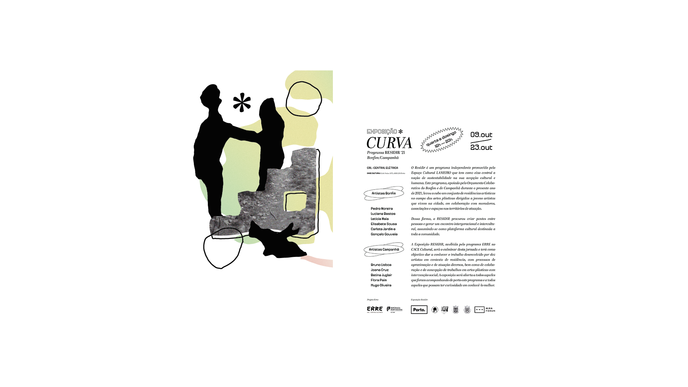
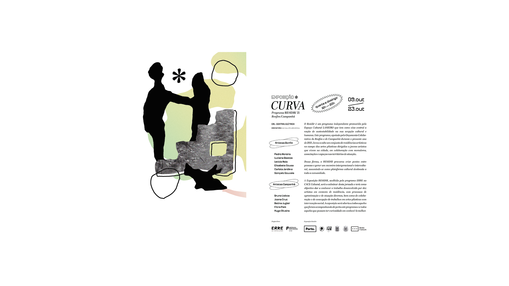

 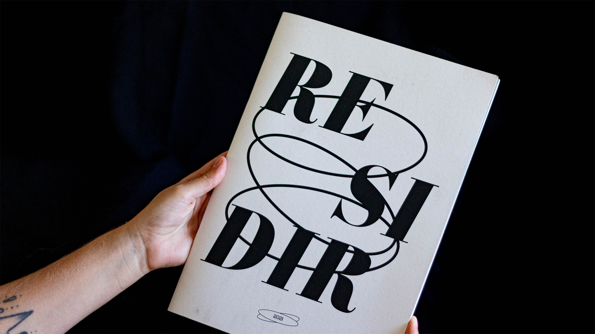
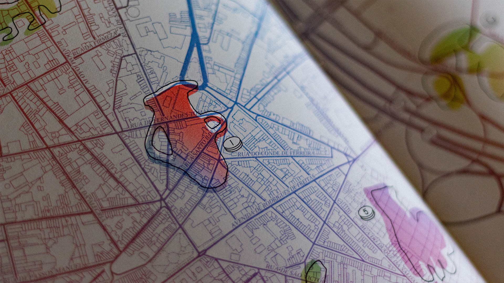
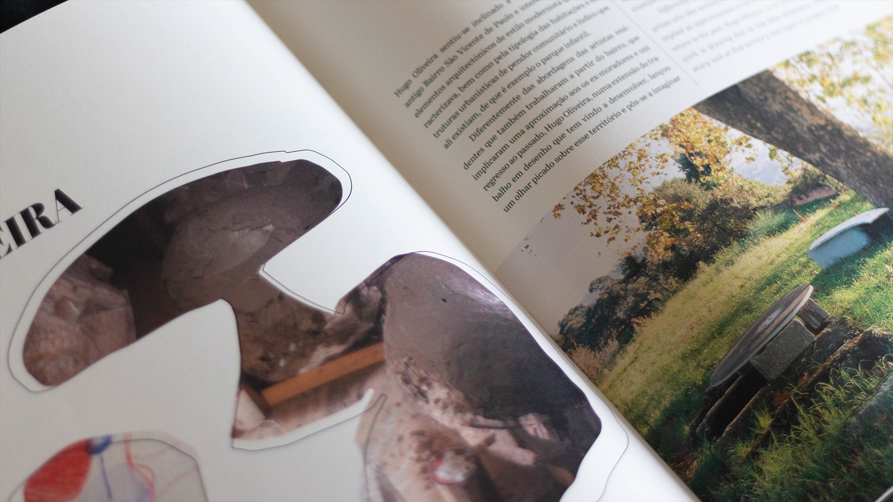
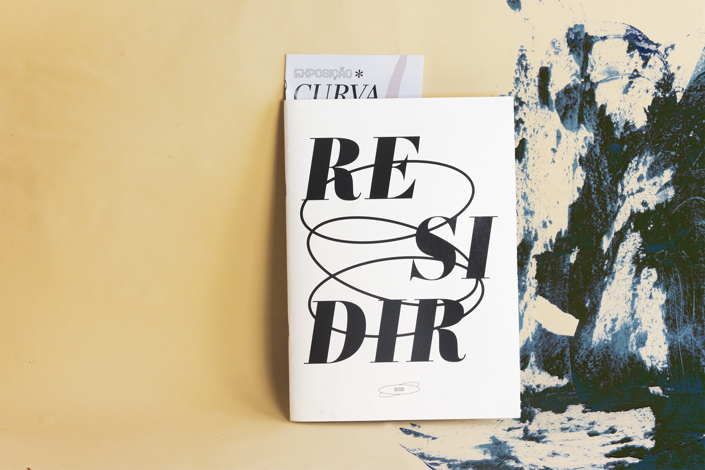
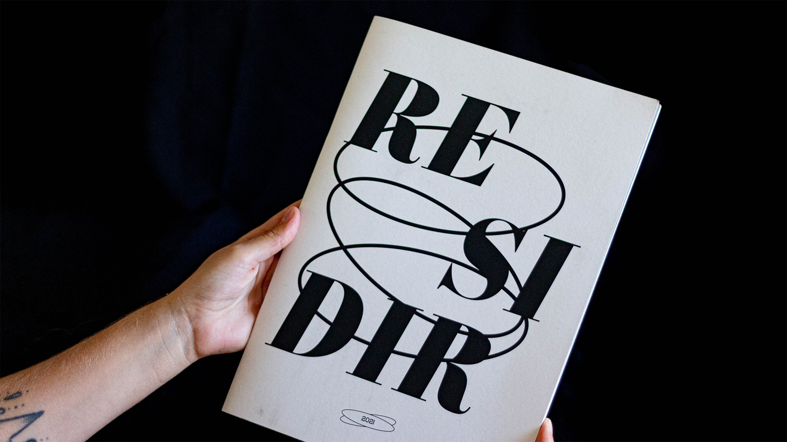
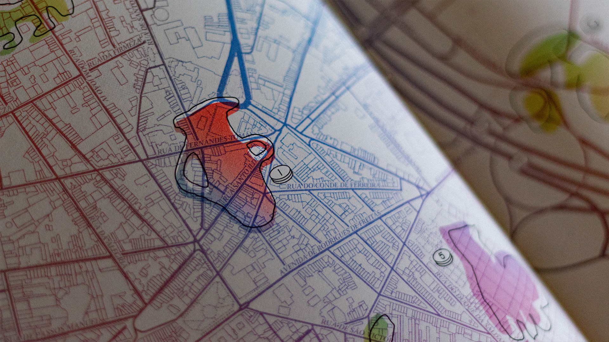
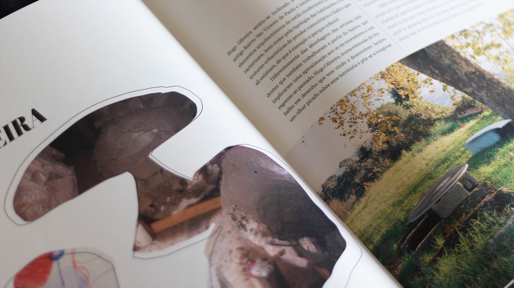
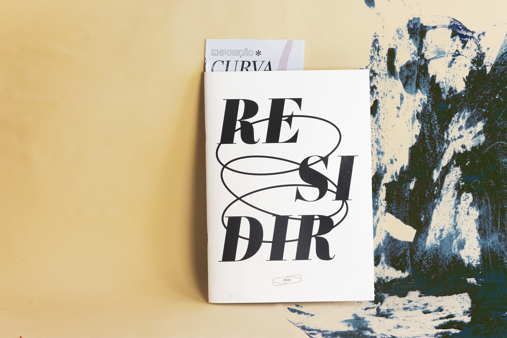


 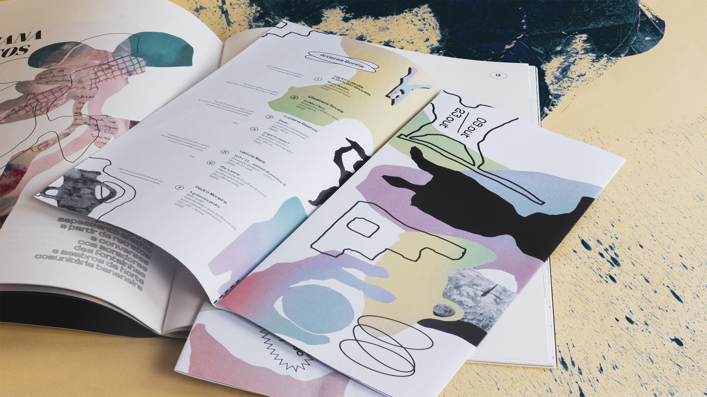
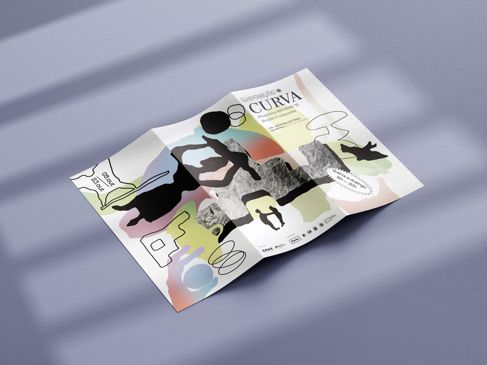
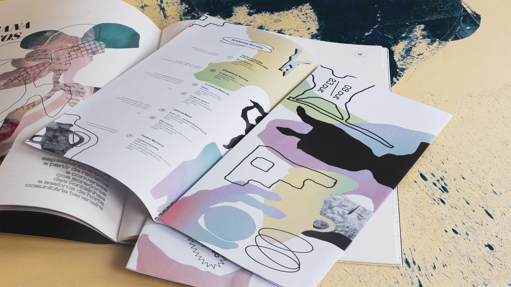
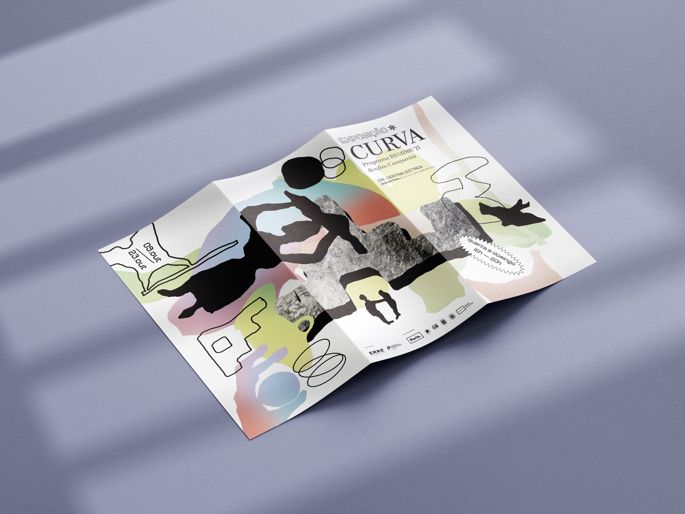